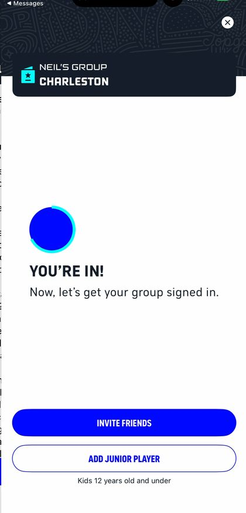
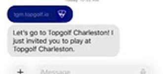
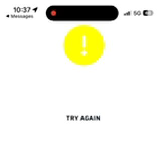
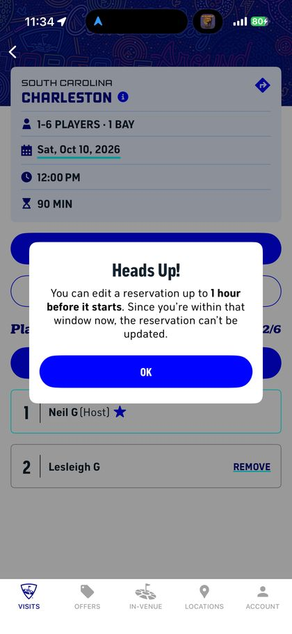

12
My wife’s invite hit a Try Again screen.
The app sign-in took nine seconds. The greeting was up in three, the waiver with its one button in eight, and “You’re in! Now, let’s get your group signed in” in twelve. That screen also offers Invite Friends and Add Junior Player. The app works.
The invite didn’t. My wife got the text: “Let’s go to Topgolf Charleston! I just invited you to play at Topgolf Charleston.” The first screen she saw was a membership fee. Then Try Again under a yellow exclamation mark, at 10:34, 10:36 and 10:37. No reason, no phone number, no second button.
Her registration failed at the submit page every time. She checked and unchecked the email and text boxes in every combination, and every one landed on Try Again. After she gave up, I had the idea to download the app and try there. That worked. By 11:19 the reservation read Players 2/6.
“Still no text. Can’t register 2nd person. No game day notification, email.”

The Try Again screen offered no second route. The one that worked came from me, not from the screen.
A second named guest on a paid booking is a cheap lead, and the invite is the one moment Topgolf asked for one. Nothing on my phone told me she was stuck. The number to pull is invite completion: sent, opened, registered, retried. A casino books a companion in one step, at the desk, with staff to finish it.






